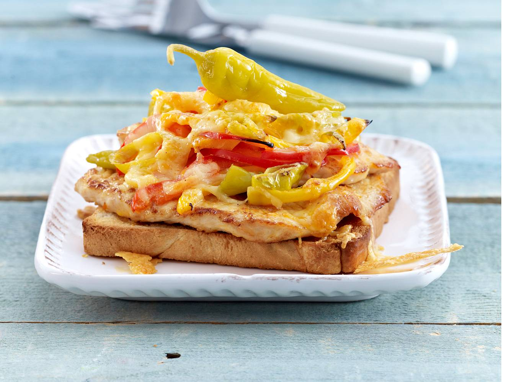

Manchmal ist die Zeit knapp, der Hunger aber trotzdem ziemlich groß. Wenn es trotzdem kein Fertiggericht sein soll, sondern ein kleiner, aber leckerer Happen zu essen, dann kann ein guter Toast echter Balsam für die Seele sein. Mit der nötigen Portion schärfe ist es alles noch besser
Diese Rezept ist die absolute Basis, hier kann natürlich alles nach belieben erweitert, ergänzt und aufgemotzt werden. Der Fantasie sind absolut keine Grenzen gesetzt.